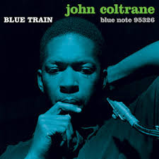
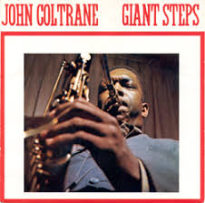
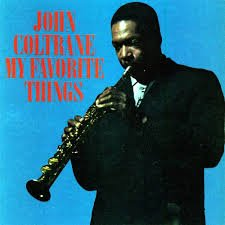
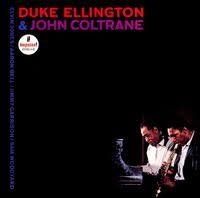
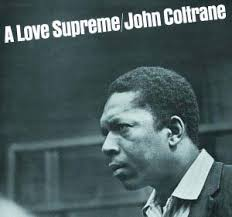

Discography of John Coltrane
- Coltrane
Year: debut solo LP; 1957
Label: Prestige Records - Blue Train
Year: 1958
Label: Blue Note Records - John Coltrane with the Red Garland Trio (1958)
Year: 1958
Label: Prestige Records - Soultrane (1958)
Year: 1958
Label: Prestige Records - Giant Steps (1960)
Year: 1960
Label: Atlantic Records - Coltrane Jazz (1961)
Year: 1961
Label: Atlantic Records - My Favorite Things (1961)
Year: 1961
Label: Atlantic Records - Olé Coltrane (1961)
Year: 1961
Label: Atlantic Records - Impulse! Records
Year: 1961
Label: Impulse! Records - Africa/Brass (1961)
Year: 1961
Label: Impulse! Records - "Live" at the Village Vanguard (1962)
Year: 1962
Label: Impulse! Records - Coltrane (1962)
Year: 1962
Label: Impulse! Records - Duke Ellington & John Coltrane (1963)
Year: 1963
Label: Impulse! Records - Ballads (1963)
Year: 1963
Label: Impulse! Records - John Coltrane and Johnny Hartman (1963)
Year: 1963
Label: Impulse! Records - Impressions (1963)
Year: 1963
Label: Impulse! Records - Live at Birdland (1964)
Year: 1964
Label: Impulse! Records - Crescent (1964)
Year: 1964
Label: Impulse! Records - A Love Supreme (1965)
Year: 1965
Label: Impulse! Records - The John Coltrane Quartet Plays (1965)
Year: 1965
Label: Impulse! Records - Ascension (1966)
Year: 1966
Label: Impulse! Records - New Thing at Newport (1966)
Year: 1966
Label: Impulse! Records - Meditations (1966)
Year: 1966
Label:Impulse! Records - Live at the Village Vanguard Again! (1966)
Year: 1966
Label: Impulse! Records - Kulu Sé Mama (1967)
Year: 1967
Label: Impulse! Records - Expression (1967)
Year: 1967
Label: Impulse! Records